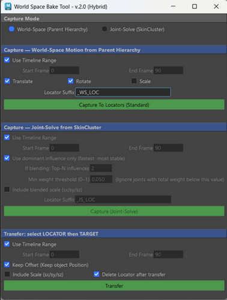

wsBakeTool
v2.0Converts motion into clean transform keys. Modes: 1) Capture world-space motion from parent hierarchy (same as v1.0), 2) Capture — Finds which joints influence a mesh that moves based on a joint hierarchy and captures the motion of the most dominant joint to a locator. If the mesh is driven by multiple joints, it can optionally calculate the average motion of those joints and temporarily copy it to a locator. Then,the motion from the locator can be baked back onto the original mesh or onto a clean duplicate of it.Result: the same animation, but without joints.